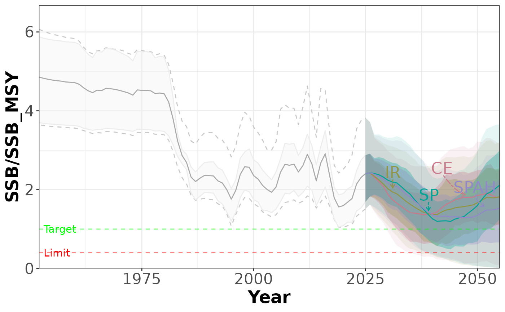
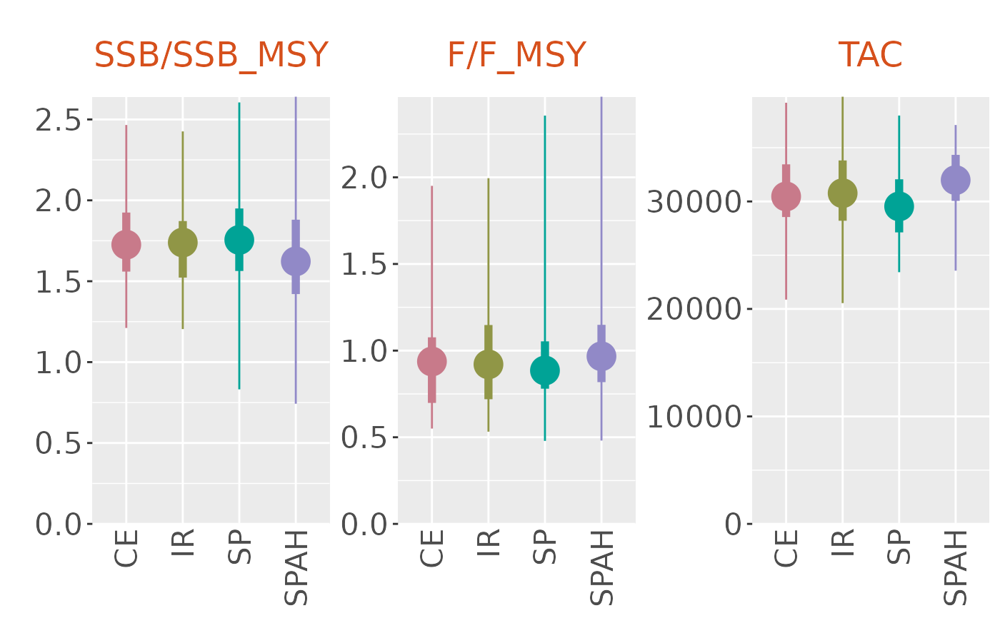
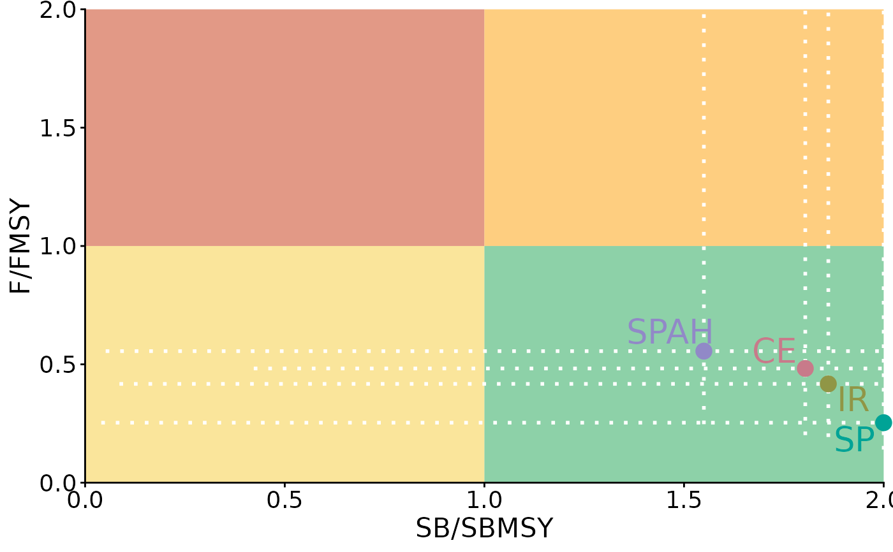
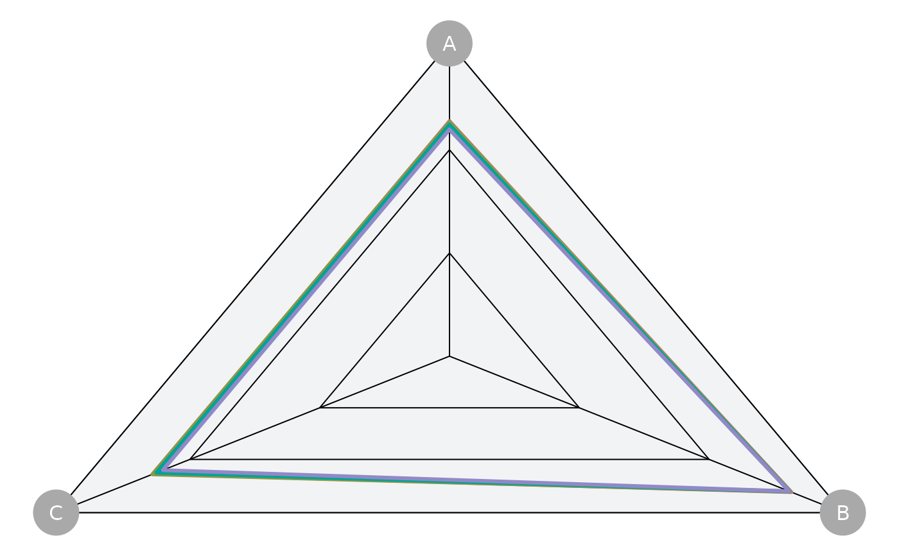
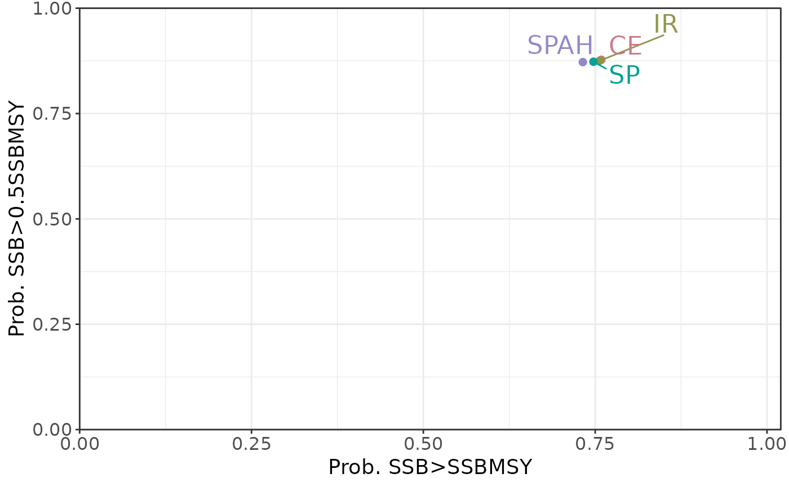

A Slick data object containing MSE results for the western Atlantic
skipjack tuna (Katsuwonus pelamis) used as a case study in Hordyk
et al. (in review). The object is derived from the WSKJ case study
available in the Slick App, with Boxplot, Quilt, Spider, and Tradeoff
slots populated from the Timeseries data to demonstrate all six plot
types supported by the package. Performance indicator values for the
additional plot types are summarized as means over the projection period
(years 2026–2055).
Format
An object of class Slick with all six plot slots populated: Timeseries, Kobe, Boxplot, Quilt, Spider, and Tradeoff.
Source
Downloaded via download_casestudy() and extended for
illustrative purposes.
Examples
# Summary of the object
WSKJ
#>
#> ── An object of class `Slick` ──────────────────────────────────────────────────
#>
#> ── `Title` ──
#>
#> ℹ Multi-language List
#>
#> ── en
#> 1. Western Atlantic Skipjack Tuna (Katsuwon ...
#>
#> ── es
#> 1. Evaluación de Estrategias de Manejo del ...
#>
#> ── fr
#> 1. Évaluation des Stratégies de Gestion du ...
#>
#> ── `Subtitle` ──
#>
#> ℹ Multi-language List
#>
#> ── en
#> 1. Final results presented during the SCRS ...
#>
#> ── es
#> 1. Resultados finales presentados durante l ...
#>
#> ── fr
#> 1. Résultats finaux présentés lors de la Ré ...
#>
#> ── `Date` ──
#>
#> September 2025
#>
#> ── `Author` ──
#>
#> 1 Rodrigo Sant’Ana
#> 2 Bruno Mourato
#> 3 Adrian Hordyk
#>
#> ── `Email` ──
#>
#> 1 rsantana@univali.br
#>
#> ── `Institution` ──
#>
#> 1 Universidade do Vale do Itajaí
#> 2 Universidade Federal de São Paulo
#> 3 Blue Matter Science
#>
#> ── `Introduction` ──
#>
#> ℹ Multi-language List
#>
#> ── en
#> 1. The SCRS’s Tropical Tunas Species Group ...
#>
#> ── es
#> 1. El Grupo de Especies de Atunes Tropicale ...
#>
#> ── fr
#> 1. Le Groupe d’Espèces des Thons Tropicaux ...
#>
#> ── `MPs` ──
#>
#> ✔ Complete
#>
#> ── `OMs` ──
#>
#> ✔ Complete
#>
#> ── `Boxplot` ──
#>
#> ✔ Complete
#>
#> ── `Quilt` ──
#>
#> ✔ Complete
#>
#> ── `Kobe` ──
#>
#> ✔ Complete
#>
#> ── `Spider` ──
#>
#> ✔ Complete
#>
#> ── `Timeseries` ──
#>
#> ✔ Complete
#>
#> ── `Tradeoff` ──
#>
#> ✔ Complete
# Check the object is valid
Check(WSKJ)
#>
#> ── Checking: "Slick" ──
#>
#> ── Checking: "MPs"
#> ✔ Complete
#>
#> ── Checking: "OMs"
#> ✔ Complete
#>
#> ── Checking: "Boxplot"
#> ✔ Complete
#>
#> ── Checking: "Quilt"
#> ✔ Complete
#>
#> ── Checking: "Kobe"
#> ✔ Complete
#>
#> ── Checking: "Spider"
#> ✔ Complete
#>
#> ── Checking: "Timeseries"
#> ✔ Complete
#>
#> ── Checking: "Tradeoff"
#> ✔ Complete
# Metadata, Management Procedures, and Operating Models
Title(WSKJ)
#> [1] "Western Atlantic Skipjack Tuna (Katsuwonus pelamis) Management Strategy Evaluation"
Metadata(MPs(WSKJ))
#> Code Label
#> 1 CE Constant Exploitation
#> 2 IR Index Ratio
#> 3 SP Surplus Production with linear HCR
#> 4 SPAH Surplus Production with non-linear HCR
#> Description
#> 1 The TAC is adjusted based on the ratio of the estimated current exploitation rate to the mean exploitation rate from 2016 - 2017, with the aim to maintain a constant exploitation rate
#> 2 The TAC is adjusted based on the ratio of the mean index over the 3 most recent years to the value of the mean index from 2019 - 2021
#> 3 A model-based a surplus production model with a 130-60 hockey stick harvest control rule and an F_Target equal to F_MSY
#> 4 The same surplus production model as SP, but with a non-linear harvest control rule
#> Color
#> 1 #C87A8A
#> 2 #909646
#> 3 #00A396
#> 4 #9189C7
Factors(OMs(WSKJ))
#> Factor Level Description
#> 1 Growth Qnt25
#> 2 Growth Qnt50
#> 3 Growth Qnt75
#> 4 Steepness h6
#> 5 Steepness h7
#> 6 Steepness h8
#> 7 Type Reference
Design(OMs(WSKJ))
#> Growth Steepness Type
#> 1 Qnt25 h6 Reference
#> 2 Qnt25 h7 Reference
#> 3 Qnt25 h8 Reference
#> 4 Qnt50 h6 Reference
#> 5 Qnt50 h7 Reference
#> 6 Qnt50 h8 Reference
#> 7 Qnt75 h6 Reference
#> 8 Qnt75 h7 Reference
#> 9 Qnt75 h8 Reference
# Plots
plotTimeseries(WSKJ)

plotBoxplot(WSKJ)

plotKobe(WSKJ)

plotQuilt(WSKJ)
plotSpider(WSKJ)

plotTradeoff(WSKJ)

if (FALSE) { # interactive()
# Explore the results in the Slick App
App(slick=WSKJ)
}